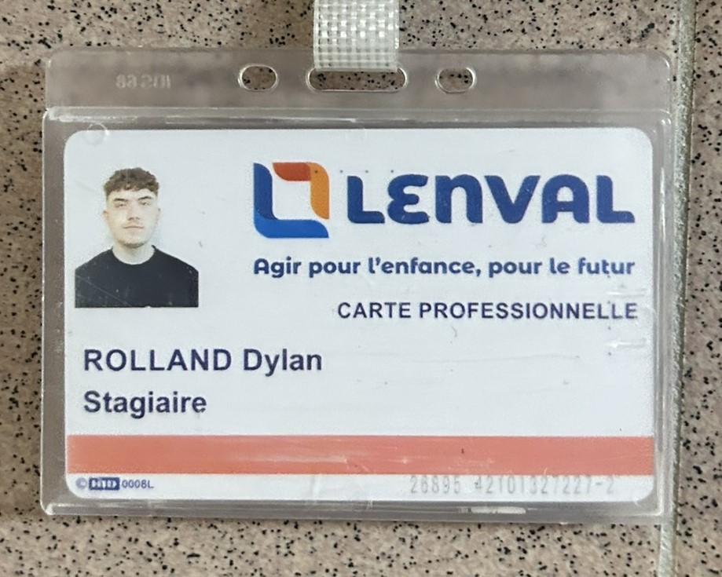

L'Hôpital pour Enfants Lenval est situé à Nice sur la Promenade des Anglais. Spécialisé dans la prise en charge pédiatrique, il offre des soins de haute qualité aux enfants de la région et au-delà. Cet hôpital est reconnu pour ses services d'urgences pédiatriques, ses unités spécialisées, ainsi que son engagement à améliorer constamment les soins pour les jeunes patients. Il a été fondé en 1888.
Implanté au bord de la Méditerranée, Lenval bénéficie d'un environnement propice au bien-être des enfants et de leurs familles. L'hôpital s'efforce de créer un cadre de travail collaboratif et innovant, où chaque membre du personnel médical et soignant joue un rôle clé dans l'excellence des soins prodigués.
J'ai choisi de réaliser mon stage à la Fondation Lenval car, en tant que Niçois, cet hôpital pédiatrique me tient particuliérement à cœur. J'ai pu contribé au service informatique d'un établissement qui aide chaque jour des enfants et leurs familles ce qui a été une expérience enrichissante pour moi. Au-delà des aspects techniques, ce stage m'a permis d'apporter un soutien direct aux médecins et aux familles dans le cadre de mes missions, ce qui a renforcé mon sentiment d'engagement et d'utilité dans cet environnement.